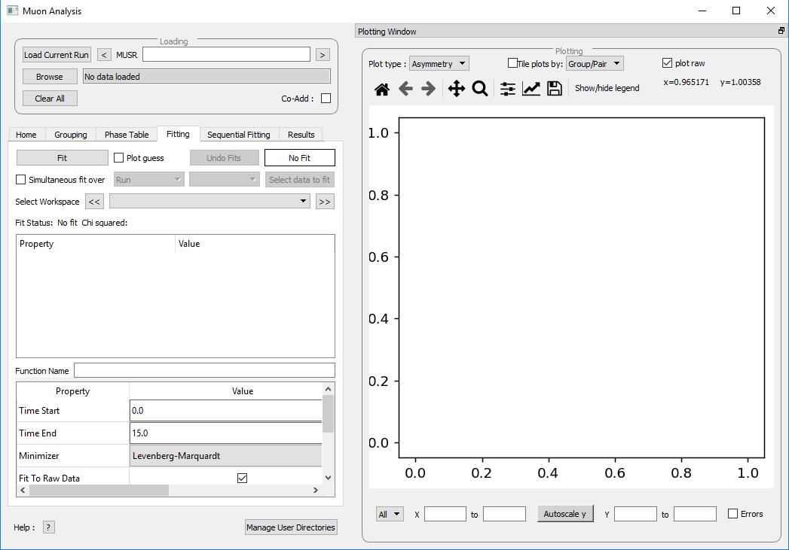
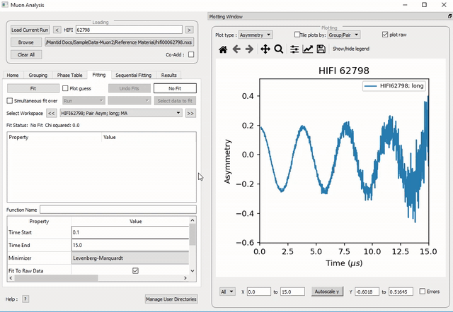
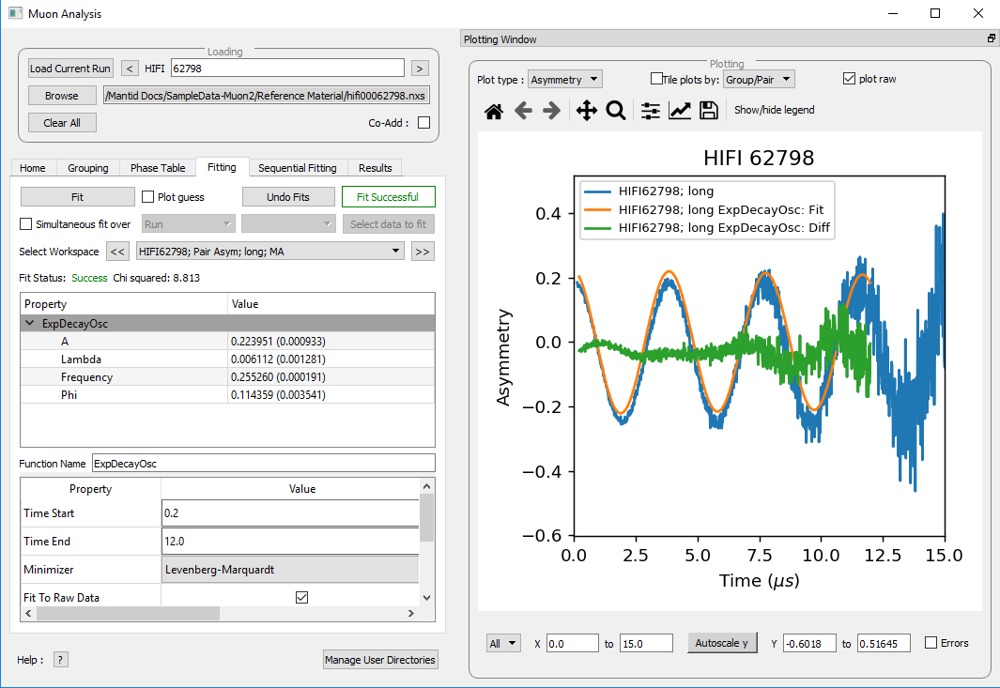
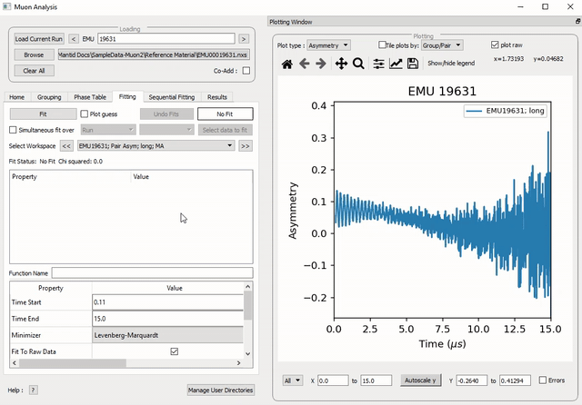
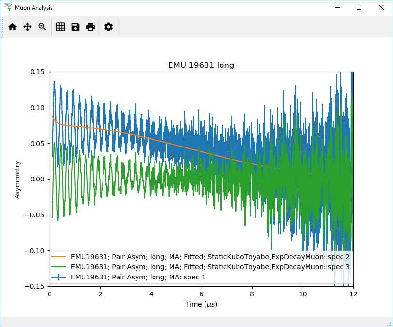
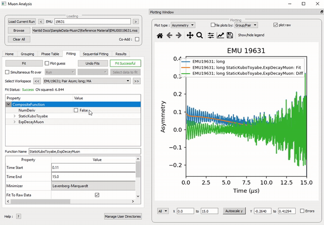
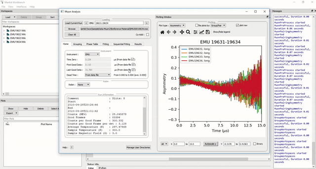

The Tabs - Fitting#
Fitting#
The Fitting tab allows the user to:
Select functions to fit to the data.
Change fit ranges and parameters.
Fit data.

Figure 24: The Fitting tab options.#
Mantid comes with a number of fitting functions. Additional functions may be added or a user may define their own function. A number of fit functions have been programmed which are specific to the analysis of muon spectra.
Some of the muon specific functions in Mantid include:
\({f(t)=A\exp(-\lambda t)\cos(\omega t + \phi)}\) |
|
\({f(t)=A\exp(-\frac{(\sigma t)^2}{2})\cos(\omega t + \phi)}\) |
|
\({f(t)=A\exp(-(\sigma t)^2 \times (\exp(-\frac{t}{\tau_c})-1+\frac{t}{\tau_c}))\cos(\omega t + \phi)}\) |
|
\({f(t)=A(\frac{1}{3}+\frac{2}{3}\exp(-\frac{(\sigma t)^2}{2})(1-(\sigma t)^2))}\) |
|
\({f(t)=A\exp(-(\lambda t)^\beta)}\) |
|
\({f(t)=A\exp(-(\sigma t)^2)}\) |
|
\({f(t)=A\exp(-\lambda t)}\) |
|
Implements equation number (3) from Brewer et al, Physical Review B 33(11) 7813-7816, to model the muon response under the formation of the F \({\mu}\) F species. |
|
Fitting for the parameters \(A\), \({\sigma}\) and \({\nu}\) (the initial asymmetry, relaxation rate and hop rate, respectively) using numerical integration techniques. |
Where:
\({\lambda}\) and \({\sigma}\) are in \({\mu s^{-1}}\).
\({\phi}\) is in radians.
\({\omega}\) is in \({MHz}\).
\({\tau}\) is in \({\mu s}\).
\({\Delta}\) is in \({MHz}\).
The compilation of custom functions is possible using Python, however this is beyond the scope of this tutorial. Detailed instructions for completing this can be found at introduction to python fit functions
Using Fit Functions#
To select a function right click in the box beneath where Fit Status is written and select Add Function.
A new window will appear with several drop-down titles; Background, Calibrate etc.; this is the Mantid-Fit dialog box.
Follow the following instructions for an example of fitting:
Load the HIFI00062798 file from the reference material folder in the home tab.
Open the Fitting tab and right click in the functions box and select Add Function.
Go to the Muon drop-down title in the Fit dialogue box.
Expand the MuonGeneric section and then select ExpDecayOsc, and press the OK button. This process is shown in Figure 25.
Figure 25: How to add a function to a data set.#
NB: To remove the function, right click on the function name and select Remove.
Function Parameters#
Once a function has been selected its name will appear in the Property column. To examine a function’s fit parameters, click on the small arrow beside the function name to expand the entry. Generic properties for performing the fit itself - such as start and end times, what minimizer to use etc. are located in the table below the functions table.
The parameters of a function can be adjusted in order to give the user maximum control over the fitting result of the data. These parameters can be adjusted before or after fitting initially, however it will require re-fitting for the changes to apply. Factors such as the time range fitted and fixing constraint boundaries can be adjusted.
Once the user is happy with the initial fit parameters, clicking Fit will perform chosen fit to the data. The fit parameters will then be updated.
To illustrate this:
If not already done, load the HIFI00062798 file and add ExpDecayOsc function (see above for instructions).
Adjust the fit limits in the lower table, for instance set start and end times of 0.2 and 12 \({\mu s}\) respectively.
Click on the Fit button top of the tab. This process is shown in Figure 26. Note that a better fit can be achieved if \({\alpha}\) is guessed via the grouping tab.
The resulting plot should look like Figure 27.

Figure 26: How to change the fitting scale of a function.#

Figure 27: The result of fitting function ExpDecayOsc to HIFI00062798. The fit is shown in orange, while the green line indicates the difference between it and the data.#
Each fit parameter can also be bound by certain fit limits (+/- 10% of its starting value, +/- 50% or a custom value), fixed at a specific user determined value, or tied together using some functional form.
To demonstrate setting bound limits:
Go to the function name and ensure the top down arrow is clicked so all fit parameters are visible.
Right click the parameter A and select Constraints > Both Bounds > 50%. The A parameter now has both its’ upper and lower bounds fixed to 50% of the value of A.
Composite Functions#
Data will sometimes require a function which is made up of multiple other functions, these combinations can be through addition or multiplication. To create a fit function involving adding and multiplying functions, follow the examples below.
Load the EMU00019631.nxs file
Add the function StaticKuboToyabe (under MuonGeneric) to the data, using the method from Using Fit Functions.
Repeat the same method to add a second function, ExpDecayMuon, to the same data set. Simply adding a function creates a composite where all functions are summed. See Figure 26 for the process.

Figure 28: How to add two functions together.#
At this point, it is possible to fit the composite function to the data. Do so now, and consider the quality of the fit between from \(x=0\) and \(x=12\). (see Overlaying and Styling Plots in Other Mantid Functions and Basic Data Manipulation for changing plot limits).

Figure 29: A plot of the ExpDecayMuon and StaticKuboToyabe functions added together and fitted to EMU19631.
It should be clear that the sum of these functions does not properly model the oscillations in the data set, to rectify this a product function can be used.
Add the ProductFunction function (from the General function type), and remove ExpDecayMuon by right clicking on it and selecting Remove.
Right click on the newly added ProductFunction and add two functions to it - ExpDecayMuon and GausOsc.
The total function now consists of \(StaticKuboToyabe + (ExpDecayMuon * GausOsc)\). (The perceptive reader may have noticed that the same effect can be achieved by adding StaticKuboToyabe and GausOsc, this is true, however it would not demonstrate the use of the ProductFunction)
- Fit the new function to the data, note that \({\chi}\) (chi) squared has decreased from 6.844 to 2.026 - the new fit function is a much better fit to the data. (Note: the workspace is stored in
EMU19631; Pair Asym; long; MA; Fitted; StaticKuboToyabe, Productfunction)

Figure 30: How to add a function which is a product of two other functions to a third.#
Sequentially Fitting Multiple Datasets#
Multiple workspaces can be selected in different combinations. Selecting many workspaces is useful for when using the sequential option, which allows Mantid to fit one function with a consistent set of parameters to a range of data sets. You need to use the separate Sequential Fitting tab to do this.
Follow the instructions below in order to sequentially fit a function to a range of data.
Load the data sets from EMU00019631-EMU00019634.
Set up a function where StaticKuboToyabe and ExpDecayMuon are added together in the Fitting tab.
Navigate to the Sequential Fitting tab and click Sequentially fit all.
To make a custom selection of data to fit, click on the run number in the table below, and then click Fit selected.
The plot will automatically show the selected fit. Use this to check all of the fits.

Figure 31: How to use sequential fit on multiple data sets.#
For more specifics on each option in the Fitting tab, see the Fitting section of Muon Analysis